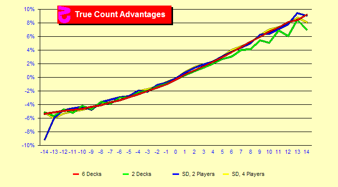

Personal project · Built with Claude Code
Still in progressHi-Lo Blackjack Trainer
A realistic blackjack table that grades card counting and strategy decisions,
built with Claude Code.

01The spark
In my Applied Probability and Statistics class I researched the probability behind blackjack and how card counting shifts the odds. That got me interested in the game as a whole, and I wanted to turn the math into something I could actually practice with. So I built a trainer with Claude Code, partly to learn the game and partly to get better at working with AI coding tools.

02What it does
It's a practice tool for two separate skills: sizing bets from the count, and playing each hand correctly (called basic strategy). It uses practice chips only. It's a learning tool, not a gambling product.
- Two scores, not one. Every bet and every play is graded, shown as correct out of attempted (for example 41/41), with separate Betting and Playing counters so I can see which skill needs work.
- “Hide answers” mode keeps the count hidden so I have to track it in my head, then explains each decision after I commit.
- Real strategy charts. Playing decisions are checked against the published Wizard of Odds basic strategy charts for 1-, 2- and 4–8-deck games.
- Configurable table rules: number of decks, whether the dealer hits soft 17, 3:2 or 6:5 blackjack payouts, surrender, doubling after a split, and how deep the cut card sits.
03Making it feel real
Counting at a real table means reading physical cues, so the trainer copies them:
- A 3D perspective table instead of a flat diagram.
- A clear acrylic shoe that shows the cut card at its true position in the deck stack.
- A discard holder drawn to real scale, about 0.3 mm per card, so one deck stands about 15.6 mm tall. That lets me practice estimating decks remaining by eye, the way a counter must at a real table.
- A dealer chip rack, seven betting circles and controls modelled on live-dealer casino apps.
04How I worked with Claude Code
I treated it like an engineering design process. Before any code was written, I wrote a detailed requirements spec with specific test cases, for example: “a running count of +7 with 130 cards left should give a true count of +2.80 and a 4-unit bet.” Then I reviewed each version and gave concrete feedback.
- Iteration 1A flat 2D table → a true 3D perspective scene.
- Iteration 2A stylized discard tray → a real-scale discard holder I can use to estimate decks.
- Iteration 3Research into real casino and live-dealer table layouts → redesigned controls.
Verification. The game logic is checked by 313 automated tests, and I played full rounds in a browser at desktop and phone sizes.
05What I learned
The quality of what I got back depended on the quality of what I asked for. Vague feedback goes nowhere, but a spec with exact test cases gave Claude Code a target and gave me a fast way to check its work.
Next steps
- Add count-based strategy deviations, where the right play changes with the true count.
- Track my accuracy across sessions to see how fast each skill improves and identify specific areas of imporvement